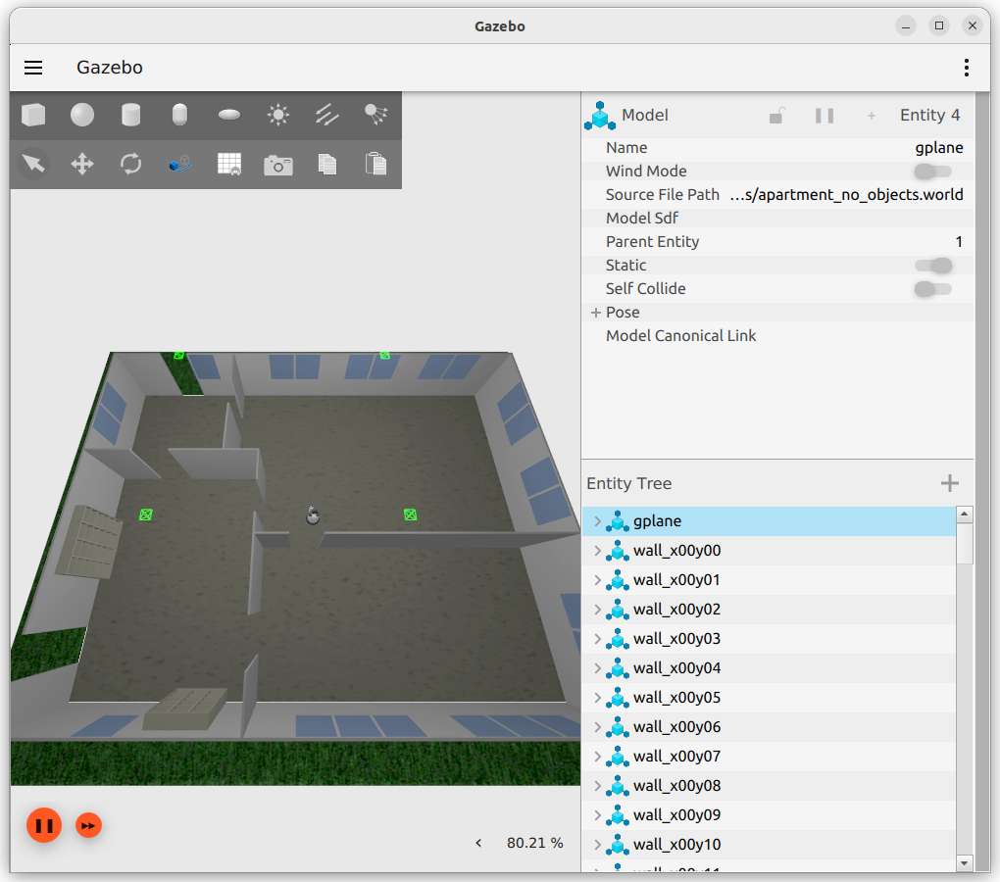
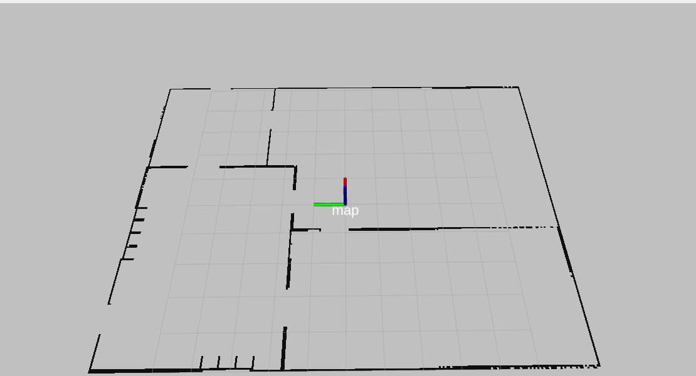
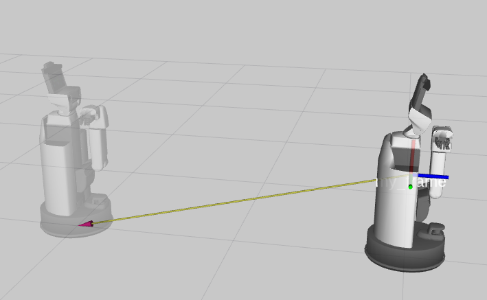
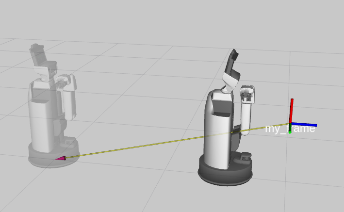
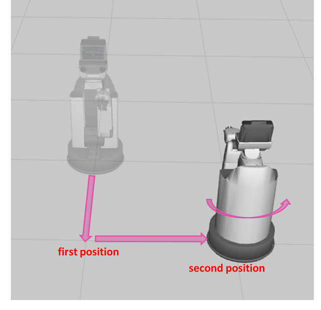

3.3. 台車を動かす#
ここではHSRの台車を操作して任意の位置に移動する方法を説明します。
3.3.1. RViz上におけるマップの解説#
以下のシミュレーション環境で、マップの説明をします。
{kind=link}

HSRが上記のシミュレーション環境内をあらかじめ移動して計測したマップが、以下の画像です。
図の方眼が1辺1[m]で、「map」と表示されている位置が(0,0,0)です。
図の中の黒いフチは、壁などがありHSRが通れない領域です。
HSRはこれらの領域を自動的に避けて移動します。
{kind=link}

3.3.2. 位置の取得#
以下を実行し、現在位置を取得してください。
In []: omni_base.pose
出力結果はHSRの現在位置によって変わり、絶対位置(mapからの位置)で表示されます。
3.3.3. 絶対位置に移動#
mapフレームを基準とした絶対位置への移動について説明します。
以下を実行し、HSRを移動させてください。
In []: whole_body.move_to_go() In []: omni_base.go_abs(1.0, -3.0, 0.0, 100.0)
このコマンドは、xに1.0[m]、yに-3.0[m]、yaw軸の回転は0.0[rad]、100.0[s]でタイムアウトという条件で移動させるものです。
以下を実行し、初期位置に戻してください。
In []: whole_body.move_to_go() In []: omni_base.go_abs(0.0, 0.0, 0.0, 100.0)
3.3.4. 相対位置に移動#
HSRの現在位置を基準とした相対位置への移動を説明します。
以下を実行し、HSRを移動させてください。
In []: whole_body.move_to_go() In []: omni_base.go_rel(1.0, 0.0, 0.0, 100.0)
このコマンドは、xに1.0[m]、yに0.0[m]、yaw軸の回転は0.0[rad]、100.0[s]でタイムアウトという条件で移動させるものです。
以下を実行し、初期位置に戻してください。
In []: whole_body.move_to_go() In []: omni_base.go_abs(0.0, 0.0, 0.0, 100.0)
3.3.5. tfを使った相対移動#
アームの時と同じように「tf」で与えられたフレームに追従させることができます。
新しいターミナルで環境変数を設定後、以下を実行し、「my_frame」を1つ作成してください。
ROS_DOMAIN_IDには、シミュレータ起動時に設定した値をセットしてください。$ export ROS_DOMAIN_ID=XXX $ source /opt/ros/<ROS_DISTRO>/setup.bash
$ ros2 run tf2_ros static_transform_publisher 2 0 0.5 3.14 -1.57 0 map my_frame
以下を実行し、初期位置に戻してください。
In []: whole_body.move_to_go() In []: omni_base.go_abs(0.0, 0.0, 0.0, 100.0)
omni_base.go_poseを利用して、「my_frame」と「HSRの位置姿勢」が一致するように移動してください。In []: whole_body.move_to_go() In []: omni_base.go_pose(geometry.pose(ei=3.14, ej=-1.57), 100.0, ref_frame_id='my_frame')
このコマンドの引数は、１つ目に位置姿勢、２つ目にタイムアウト時間、３つ目に基準フレームを指定します。

「my_frame」の0.5[m]手前なども以下のように指定することができます。
ここで
ei=3.14、ej=-1.57になっているのは、目標フレームに対してHSRの姿勢のz軸を上向きにするためです。In []: whole_body.move_to_go() In []: omni_base.go_pose(geometry.pose(z=-0.5, ei=3.14, ej=-1.57), 100.0, ref_frame_id='my_frame')

{kind=link}
{kind=link}
3.3.6. 軌道追従#
リストで与えられた位置姿勢の順に追従させることができます。
以下を実行し、軌道追従をしてください。
In []: whole_body.move_to_go()
In []: omni_base.follow_trajectory([geometry.pose(x=1.0, y=0.0, ek=0.0), geometry.pose(x=1.0, y=1.0, ek=math.pi)], time_from_starts=[10, 30], ref_frame_id='base_footprint')
このコマンドの引数は、１つ目に位置姿勢のリスト、２つ目に移動時間、３つ目に基準フレームを指定します。
移動時間を与えない場合は、最適化された速度で移動します。 ここでは、開始から10[sec]で1つ目の位置姿勢に移動し、開始から30[sec]で2つ目の位置姿勢まで移動します。
{kind=link}

3.3.7. 非同期移動#
移動の状況を確認したり、移動を途中で止めることができます。
非同期移動の関数の候補は、 omni_base.create と入力して「Tab」キーを押すことで確認できます。
ここでは、 omni_base.create_follow_trajectory_goal で移動させます。
In []: whole_body.move_to_go()
In []: goal = omni_base.create_follow_trajectory_goal([geometry.pose(x=1.0, y=0.0, ek=0.0), geometry.pose(x=1.0, y=1.0, ek=math.pi)])
In []: omni_base.execute(goal)
omni_base.create_follow_trajectory_goal でゴールを生成します。
このコマンドの引数には、位置姿勢のリストを指定します。
生成したゴールを omni_base.execute の引数に指定し、実行すると台車は移動を開始します。
動作中か確認する
In []: omni_base.is_moving()
動作を中止する
In []: omni_base.cancel_goal()
動作が成功したか確認する
In []: omni_base.is_succeeded()